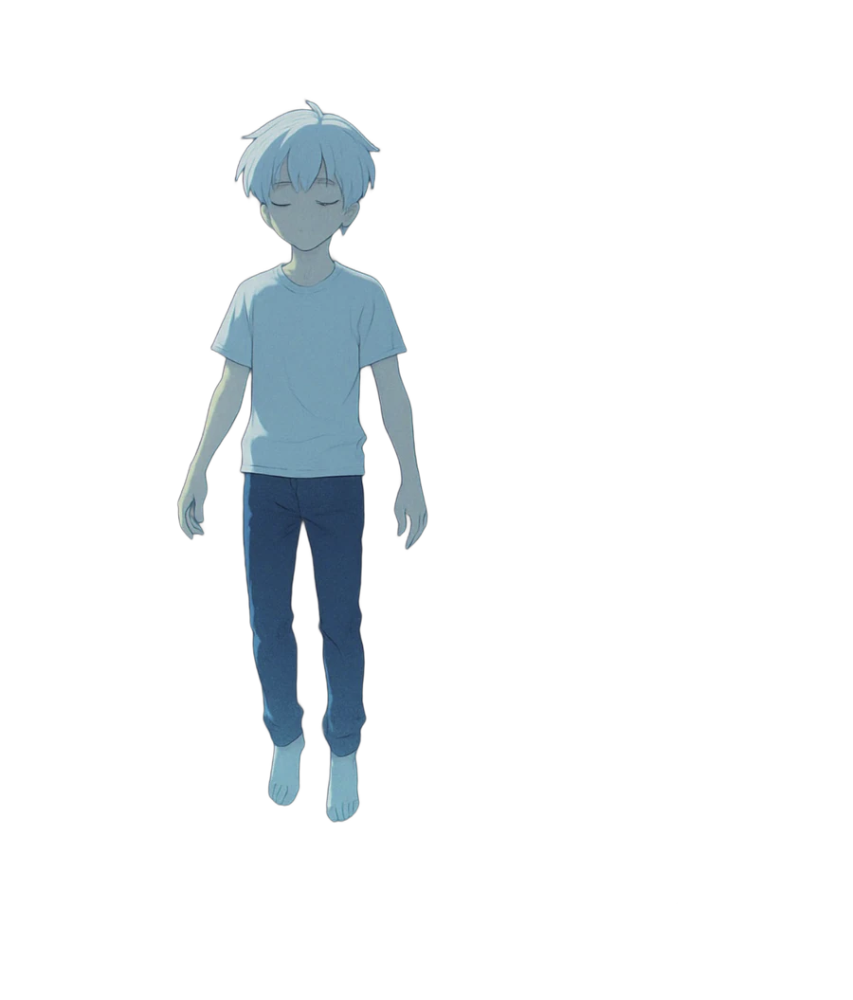

Senses
Text and speech in. He reads what you type and hears what you dictate.
- input
- text · speech
- limit
- 800 chars public · 6,000 private
- api
- SpeechRecognition

IAN wakes when a request arrives, thinks in a language model, speaks as a token stream and keeps his memory on your device. Everything on this page is him, running live.
IAN doesn't live on one server. Every message lands on the nearest edge node, picks up his rules and memory, and streams back in real time.
Keep scrolling. The trace opens up and follows a single message from your thumb to the model and back.
Typed or dictated. The app sends your last 12 turns, each capped at 800 characters, and nothing else unless private mode is on.
A Cloudflare Worker checks the origin, rate limits by IP and verifies the passcode by comparing SHA-256 digests. The API key lives here as a secret and never reaches the browser.
The worker adds IAN's system prompt, the hard safety rules and your memory notes, then calls Claude or GPT with a fixed token budget.
Tokens arrive as server-sent events and render as they land. Output is written with text nodes only, so a reply can't inject markup into the page.
If the worker can't be reached, an intent-matching core in the browser replies with zero requests. A service worker keeps the app itself available offline.
IAN isn't a mascot sitting on top of a chatbot. Every part of him maps to something real in the stack.
this page: 16,000 particles · 2 WebGL programs · 0 libraries · about 80 kB of hand-written JavaScript
Text and speech in. He reads what you type and hears what you dictate.
Signals travel as a server-sent event stream, so words reach you while he's still forming the sentence.
A language model called from the edge: Claude, GPT, Gemini or Cloudflare Workers AI, whichever the worker holds.
Notes he keeps about you, stored on your device and nowhere else. You can read and delete every one.
When the network dies, a pattern-matching core in your browser keeps answering.
Rules written into his prompt and limits enforced at the edge. He will not do these, whoever asks.
That's the real app on the right, running live. Ask him how he works, hand him a bug, or paste a link you don't trust.
A public chatbot with a paid API behind it is a target. This is each way in, and what's standing in front of it.
innerHTML in the chat path, and links open with noopener.localStorage on your device and are only sent to the worker in private mode. Delete them any time in Settings.// Compare passcodes through SHA-256 so timing doesn't leak how many characters matched.
async function samePasscode(a, b) {
const enc = new TextEncoder();
const [x, y] = await Promise.all([
crypto.subtle.digest("SHA-256", enc.encode(a)),
crypto.subtle.digest("SHA-256", enc.encode(b))
]);
const u = new Uint8Array(x), v = new Uint8Array(y);
let diff = 0;
for (let i = 0; i < u.length; i++) diff |= u[i] ^ v[i];
return diff === 0;
}Rate limits are held in worker memory, so treat them as a first line. Set a monthly spend cap on your API key as the hard limit.
If a link isn't listed here, it isn't IAN. Copy the contract from this page or from @IAN_holo and nowhere else.
Contract address not posted yetCrypto is risky. Nothing here is financial advice.
Fork the repo, put your API key in a Worker, set a passcode, and he answers to you.